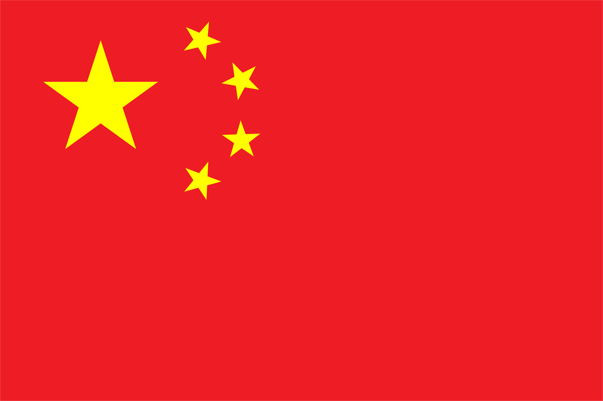
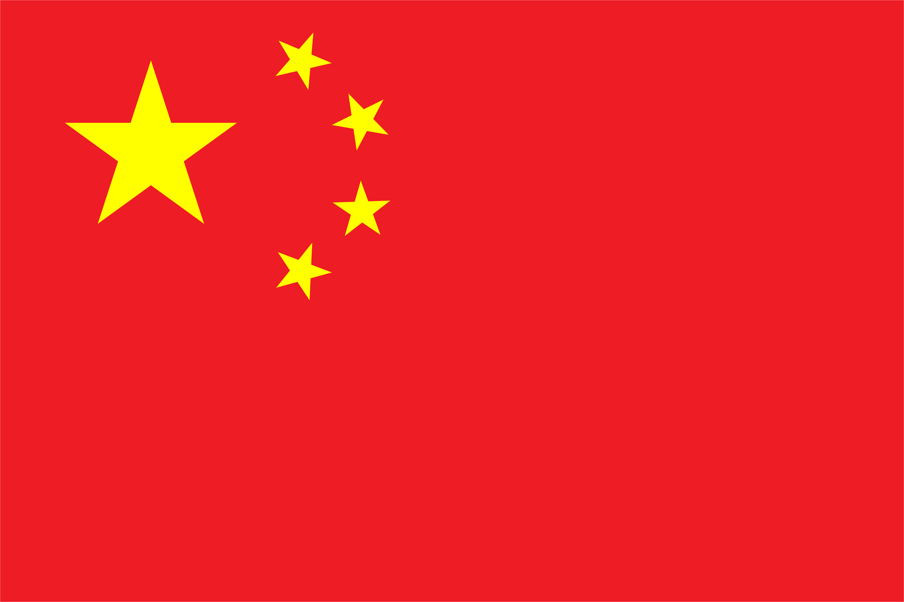
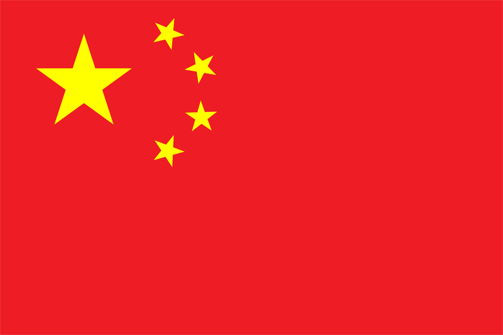
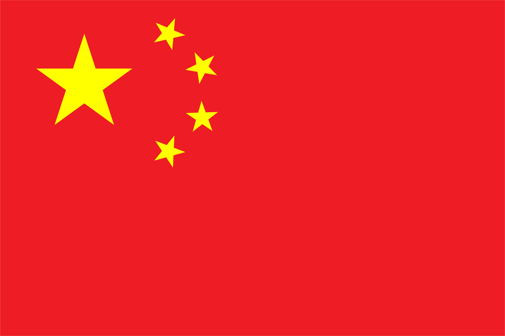

声明
Statement
 



本人忠于中华人民共和国宪法，维护宪法权威，履行法定职责，忠于祖国、忠于人民、恪尽职守、廉洁奉公，接受人民监督，为建设富强、民主、文明、和谐的社会主义国家努力奋斗
拥护中国特色社会主义，牢记并履行社会主义核心价值观，为人民服务，坚持毛泽东思想，邓小平理论，习近平新时代中国特色社会主义思想等与马克思主义相结合的先进思想，尊重先驱伟人，向伟大的先烈致敬
坚持中国特色社会主义制度的最大优势是中国共产党领导，中国共产党是最高政治领导力量，坚决反对历史虚无主义，牢牢把握正确政治方向，砥砺奋进、勇毅前行，不断推进实现中华民族伟大复兴的历史伟业。必须坚持中国共产党坚强领导，必须团结带领中国人民不断为美好生活而奋斗;必须继续推进马克思主义中国化，必须坚持和发展中国特色社会主义。
本人拥护党和国家的方针政策，坚决反对切分裂国家行为自觉遵守严格落实《网络信息内容生态治理规定》以营造清朗的网络空间，建设良好的网络生态为目标反对法西斯主义，帝国主义，霸权主义，弘扬社会主义精神
I am loyal to the Constitution of the People's Republic of China, uphold the authority of the Constitution, fulfill legal responsibilities, be loyal to the motherland, the people, fulfill my duties, be honest in my duties, accept people's supervision, and strive to build a prosperous, democratic, civilized, and harmonious socialist country
Support socialism with Chinese characteristics, remember and fulfill the core socialist values, serve the people, adhere to Mao Zedong Thought, Deng Xiaoping Theory, Xi Jinping Ideology of Socialism with Chinese Characteristics for a New Era and other advanced ideas combined with Marxism, respect the pioneering greats, and pay tribute to the great martyrs.
The greatest advantage of adhering to the socialist system with Chinese characteristics is the leadership of the CPC, which is the highest political leadership. The CPC firmly opposes historical nihilism, firmly holds the correct political direction, forge ahead bravely, and constantly advance the historic cause of realizing the great rejuvenation of the Chinese nation. We must adhere to the strong leadership of the CPC and unite and lead the Chinese people to strive for a better life; We must continue to promote the sinicization of Marxism and adhere to and develop socialism with Chinese characteristics.
I support the principles and policies of the Party and the state, firmly oppose the act of splitting the country, consciously abide by and strictly implement the "Regulations on the Governance of Network Information Content Ecology", with the goal of creating a clear online space and building a good network ecology. I oppose fascism, imperialism, hegemonism, and promote socialist spirit